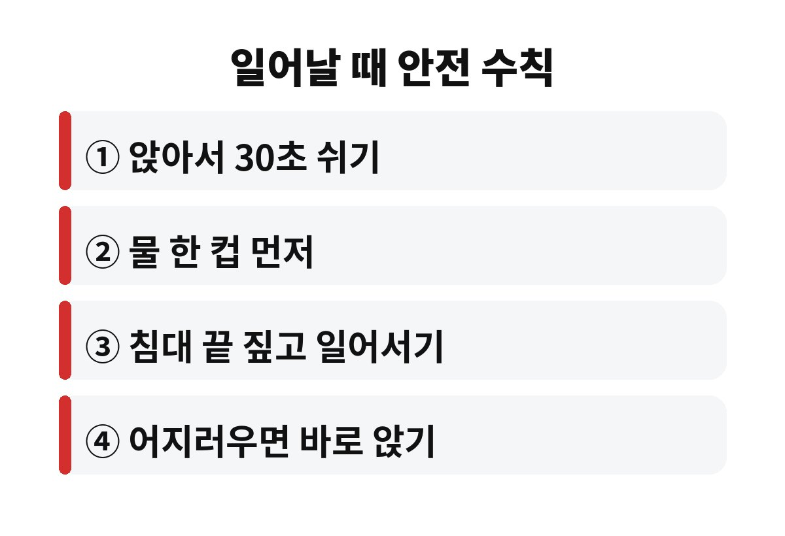
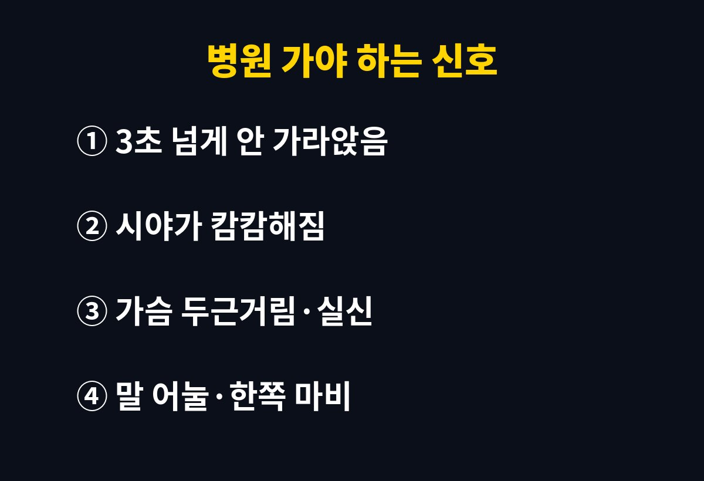

일어날 때 어지러움이 몇 초 만에 사라진다면 대개는 일시적인 혈압 변화지만, 3초 이상 길게 이어지거나 자주 반복된다면 그냥 넘기면 안 됩니다. 11월 아침, 부모님이 자리에서 일어나다 휘청이신 적 있다면 어떤 신호를 놓치고 있는 걸까요?
누워 있거나 앉아 있다가 갑자기 일어서면 피가 중력 때문에 다리 쪽으로 쏠립니다. 이때 몸은 혈관을 조여 혈압을 빨리 맞춰야 하는데, 이 반응이 잠깐 늦으면 머리로 가는 피가 순간적으로 줄어 핑 도는 느낌이 들죠. 이걸 흔히 기립성 저혈압이라고 부릅니다.
나이가 들수록 혈압을 조절하는 반응이 느려져서 중장년층에게 더 흔합니다. 여기에 날씨가 쌀쌀해지는 11월에는 혈관이 수축했다 풀렸다를 반복하니 아침 기상 때 어지러움을 더 자주 느끼시는 분이 늘어요.

밤새 자는 동안 몸은 수분이 빠져나가 아침에는 혈액량이 살짝 줄어 있습니다. 그래서 일어나기 전에 물을 한 컵 마시면 도움이 되는 경우가 많아요. 그리고 눈을 뜨자마자 벌떡 일어나지 말고, 침대 끝에 앉아 30초쯤 쉬었다 일어나 보세요. 별것 아닌 습관 같지만 낙상을 막는 데는 꽤 큰 차이를 만듭니다.
또 하나, 뜨거운 샤워 직후나 화장실에서 오래 쪼그려 앉았다 일어날 때도 같은 일이 생기기 쉽습니다. 이럴 때도 한 번에 일어나기보다 손잡이를 짚고 천천히 일어나는 게 안전해요.
| 상황 | 이렇게 해보세요 |
| 아침 기상 | 물 한 컵 + 앉아서 30초 |
| 샤워 직후 | 미지근한 물, 천천히 일어나기 |
| 어지러움 시작 | 즉시 앉거나 눕기 |
대부분은 앉아서 쉬면 가라앉지만, 아래 경우에는 미루지 말고 진료를 받아보시는 게 좋습니다. 어지러움이 3초를 넘어 오래 가거나, 눈앞이 캄캄해지며 쓰러질 뻔했거나, 가슴이 두근거리고 식은땀이 나는 경우입니다. 말이 어눌해지거나 한쪽 팔다리에 힘이 빠진다면 어지러움이 아니라 다른 질환일 수 있어 바로 응급실로 가셔야 해요.
평소 생활 습관도 은근히 영향을 줍니다. 수분을 너무 적게 마시거나, 식사를 거르거나, 술을 자주 드시면 혈압 조절이 더 느려져서 일어날 때 어지러움이 심해질 수 있어요. 특히 아침을 거르고 바로 외출하는 분들은 한 번쯤 점검해 보시길 권합니다. 하루에 물을 나누어 자주 마시고, 식사를 규칙적으로 챙기는 것만으로도 느낌이 달라지는 분이 많습니다.
다리 근육을 쓰는 가벼운 운동도 도움이 됩니다. 다리 근육은 피를 다시 위로 밀어 올리는 펌프 역할을 하거든요. 앉아서 발끝을 위아래로 움직이거나, 일어서기 전에 종아리에 힘을 몇 번 주는 정도만 해도 좋아요. 걷기나 스트레칭을 꾸준히 하시면 아침 어지러움이 줄어드는 경우가 많으니, 무리하지 않는 선에서 매일 조금씩 해 보세요.

혈압약, 이뇨제, 전립선 약, 수면제 같은 일부 약은 일어설 때 어지러움을 키울 수 있습니다. 그렇다고 임의로 약을 줄이거나 끊으시면 오히려 더 위험해요. 어지러움이 약을 바꾼 뒤부터 심해졌다면 복용 시간이나 용량을 조정할 수 있으니 처방해 준 의사에게 꼭 말씀해 보세요.
마지막으로 집 안 환경도 살펴보세요. 침대 옆에 은은한 조명을 두고, 미끄러운 슬리퍼나 바닥의 물기, 걸려 넘어질 만한 전선을 정리해 두면 혹시 어지러워도 크게 다치는 일을 막을 수 있습니다. 욕실에는 미끄럼 방지 매트와 손잡이가 있으면 훨씬 안심이 돼요.
또 하나 기억하실 점은, 어지러울 때 억지로 버티며 걸어가려 하지 말고 바로 주저앉듯 앉거나 벽에 기대는 게 훨씬 안전하다는 것입니다. 잠깐 쉬고 나서도 증상이 남아 있다면 혼자 참지 말고 주변에 도움을 요청하세요.
부모님이 "나이 들면 다 그렇지" 하고 넘기신다면 가족이 먼저 챙겨 드리는 게 좋습니다. 어지러움 때문에 넘어져 다치는 일은 중장년 이후에 특히 큰 후유증으로 이어지기 쉽거든요. 오늘 아침 일어날 때 어땠는지, 부모님께 안부 전화 한 통 드려 보시는 건 어떨까요?
도움이 되셨다면 구독해 두시고, 일어날 때 어지러움 때문에 불편했던 경험은 댓글로 남겨 주세요.
※ 이 글은 일반적인 건강 정보이며 진단·치료를 대신하지 않습니다. 증상이 반복되거나 심하면 전문의 상담을 받으세요.